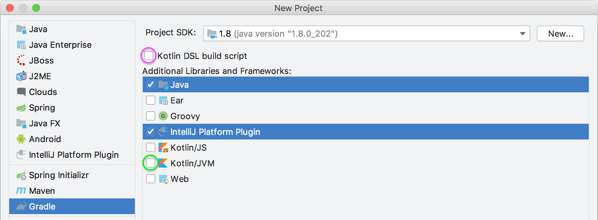

Getting Started with Gradle
Gradle is the preferred solution for creating IntelliJ Platform plugins. The IntelliJ IDEA Ultimate and Community editions bundle the necessary plugins to support Gradle-based development. These IntelliJ IDEA plugins are Gradle and Plugin DevKit, which are enabled by default. To verify these plugins are installed and enabled, see the help section about Managing Plugins.
- Creating a Gradle-Based IntelliJ Platform Plugin with New Project Wizard
- Adding Gradle Support to an Existing DevKit-Based IntelliJ Platform Plugin
- Running a Simple Gradle-Based IntelliJ Platform Plugin
Creating a Gradle-Based IntelliJ Platform Plugin with New Project Wizard
IntelliJ IDEA supports creating new Gradle-based IntelliJ Platform plugin projects using the New Project Wizard. The Wizard creates all the necessary project files based on a few template inputs.
Before creating a new Gradle project, familiarize yourself with the IntelliJ IDEA help topic Creating a new Gradle project, which is a tutorial for creating general Gradle projects in IntelliJ IDEA. This page emphasizes the steps in the process for creating IntelliJ Platform plugin projects that are Gradle-based.
Launch the New Project Wizard. It guides you through the Gradle project creation process with four screens.
New Project Configuration Screen
On the first screen, the type of project is configured:
- From the product category pane on the left, choose Gradle.
- Specify the Project SDK based on the Java 8 JDK. This SDK will be the default JRE used to run Gradle, and the JDK version used to compile the plugin Java source. Based on the Project SDK, the IntelliJ IDEA Gradle Plugin will download the corresponding version of the IntelliJ Platform-based IDE automatically.
- In the Additional Libraries and Frameworks panel, select Java and IntelliJ Platform Plugin. These settings will be used for the remainder of this tutorial.
- Optionally:
- To include support for the Kotlin language in the plugin, check the Kotlin/JVM box (circled in green below.) This option can be selected with or without the Java language.
- To create the
build.gradlefile as a Kotlin build script rather than Groovy, check the Kotlin DSL build script box (circled in magenta below.)
Then click Next:

Project Naming Screen
On this, the second screen of the Wizard, specify a Group ID, Artifact ID, and plugin Version using Maven naming conventions.
- Group ID is typically a Java package name, and it is used for the Gradle property
project.groupvalue in the project’sbuild.gradlefile. For this example, enter “com.your.company”. - Artifact ID is the default name of the project JAR file (without version).
It is also used for the Gradle property
rootProject.namevalue in the project’ssettings.gradlefile. For this example, enter “my_gradle_plugin”. - Version is used for the Gradle property
project.versionvalue in thebuild.gradlefile. For this example, enter “1.0”.
Click Next to continue.
Gradle Settings Screen
The third screen prompts for Gradle-specific settings. All of these settings can be changed once the project is created via Settings | Build, Execution, Deployment | Build Tools | Gradle. Select the default settings and click Next to continue.
Project Name and Location Screen
The final Wizard screen is for setting the project name and location. The Project name is pre-filled with the Artifact ID.
Note the choice of Project format under More Settings is somewhat superfluous.
Although an .idea directory or .ipr file is generated as the project is created and built, it is Gradle and the IntelliJ IDEA Gradle plugin that control many aspects of the project.
Click Finish.
Components of a Wizard-Generated Gradle IntelliJ Platform Plugin
For the example my_gradle_plugin, the New Project Wizard creates the directory content shown below:
- The default IntelliJ Platform
build.gradlefile. The contents are further discussed below. - The Gradle Wrapper files, and in particular the
gradle-wrapper.propertiesfile, which specifies the version of Gradle to be used to build the plugin. If needed, the IntelliJ IDEA Gradle plugin will download the version of Gradle specified in this file. - The
settings.gradlefile, containing a definition of therootProject.name. - The
META-INFdirectory under the defaultmainSourceSet contains the plugin configuration file.
my_gradle_plugin
├── build.gradle
├── gradle
│ └── wrapper
│ ├── gradle-wrapper.jar
│ └── gradle-wrapper.properties
├── gradlew
├── gradlew.bat
├── settings.gradle
└── src
├── main
│ ├── java
│ └── resources
│ └── META-INF
│ └── plugin.xml
└── test
├── java
└── resources
The New Project Wizard produces the my_gradle_plugin project build.gradle file shown below:
- There is no explicit
buildscript{}in the file. The IntelliJ IDEA Gradle plugin dynamically creates abuildscript{}. - Two plugins to Gradle are explicitly declared:
- The Gradle Java plugin.
- The IntelliJ IDEA Gradle plugin.
- The Group ID from the Wizard Project Naming Screen is the
project.groupvalue. - The Version from the Wizard Project Naming Screen is the
project.versionvalue. - The
sourceCompatibilityline is injected to enforce using Java 8 JDK to compile Java source. - The only comment in the file is a link to the README.md for the IntelliJ IDEA Gradle plugin, which is a reference for the DSLs defined by the plugin.
- The value of the Setup DSL attribute
intellij.versionspecifies the version of the IntelliJ Platform to be used to build the plugin. It defaults to the version of IntelliJ IDEA that was used to run the New Project Wizard. - The value of the Patching DSL attribute
patchPluginXml.changeNotesis set to place holder text.
plugins {
id 'java'
id 'org.jetbrains.intellij' version '0.4.17'
}
group 'com.your.company'
version '1.0'
sourceCompatibility = 1.8
repositories {
mavenCentral()
}
dependencies {
testCompile group: 'junit', name: 'junit', version: '4.12'
}
// See https://github.com/JetBrains/gradle-intellij-plugin/
intellij {
version '2019.1'
}
patchPluginXml {
changeNotes """
Add change notes here.<br>
<em>most HTML tags may be used</em>"""
}
Plugin Gradle Properties and Plugin Configuration File Elements
The Gradle properties rootProject.name and project.group will not, in general, match the respective plugin.xml elements <name> and <id>.
There is no IntelliJ Platform-related reason they should as they serve different functions.
The <name> element is often similar to the content root, but is more explanatory than the rootProject.name.
The <id> is a unique identifier over all plugins, typically a concatenation of the Maven groupId and artifactId; the default Gradle project.group property is only the groupId.
Adding Gradle Support to an Existing DevKit-Based IntelliJ Platform Plugin
Converting a DevKit-based plugin project to a Gradle-based plugin project can be done using the New Project Wizard to create a Gradle-based project around the existing DevKit-based project:
- Ensure the directory containing the DevKit-based IntelliJ Platform plugin project can be fully recovered if necessary.
- Delete all the artifacts of the DevKit-based project:
.ideadirectory- IML file
outdirectory
- Arrange the existing source files within the project directory in Gradle SourceSet format.
- Use the New Project Wizard as though creating a new Gradle project from scratch.
- On the Project Naming Screen set the values to:
- GroupID to the existing package in the initial source set.
- ArtifactID to the name of the existing plugin.
- Version to the same as the existing plugin.
- On the Project Name and Location Screen set the values to:
- Project name to the name of the existing plugin. (It should be pre-filled from the ArtifactID)
- Set the Project location to the directory of the existing plugin.
- Click Finish to create the new Gradle-based plugin.
- Add more modules using Gradle Source Sets as needed.
Running a Simple Gradle-Based IntelliJ Platform Plugin
Gradle projects are run from the IDE’s Gradle Tool window.
Adding Code to the Project
Before running my_gradle_project, some code could be added to provide simple functionality.
See the Creating Actions tutorial for step-by-step instructions for adding a menu action.
Executing the plugin
Open the Gradle tool window and search for the runIde task:
- If it’s not in the list, hit the Refresh button at the top of the Gradle window.
- Or Create a new Gradle Run Configuration.

Double-click on the runIde task to execute it. See the IntelliJ IDEA help for more information about Working with Gradle tasks.
Finally, when my_gradle_plugin launches in the IDE development instance, there should be a new menu under the Tools menu.